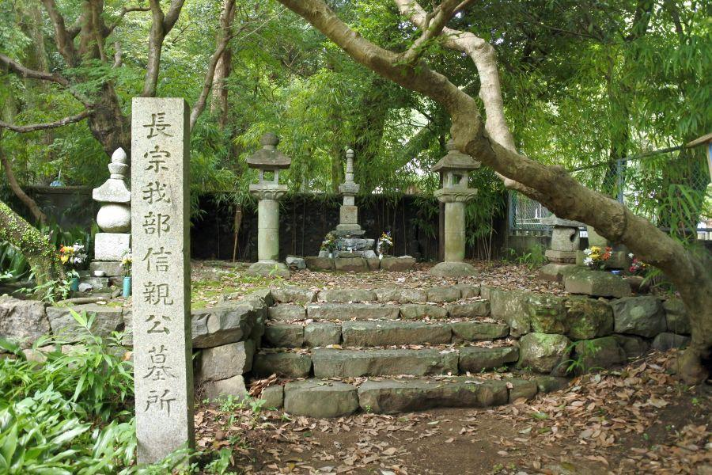

一人の戦国武将の死が、その後の四国の運命を変えた？ < 長宗我部信親公墓所 / 高知市 >
ここは南国土佐、月と龍馬で有名な桂浜から そう遠くない場所にある、お寺さん。四国八十八ヶ所の第33番札所でもあります。
境内片隅に祀られている戦国武将の早逝(そうせい)は、その後の四国の運命を変えた...。かもしれません。
四国八十八ヶ所・第三十三番雪蹊寺
四国八十八ヶ所 第三十三番雪蹊寺(しこくはちじゅうはちかしょ だいろくさんじゅうさんばん せっけいじ / 高知県高知市)
"蹊" の字は、個人的に ここ以外で見たことがありませんが、単体では 「あしあと」 のような意味。
四国八十八ヶ所の祖・空海が建立した当時は "高福寺(こうふくじ)" と称したが、その後 荒廃。長宗我部家が台頭してきた戦国時代には廃寺同然になっていた。
そこを長宗我部元親の庇護(ひご)を受けて再興、元親死後は 長宗我部家の菩提寺となる。その際に 元親の法名である "雪蹊恕三大禅定門(せつけいにょさんたいぜんしょうもん)" から、現名称に改められた。
土佐一国のみならず 四国を一時平定した長宗我部家にとって、非常にゆかりの深い寺院なのです。
長宗我部家嫡男(ちゃくなん)・信親
その本堂前にある立て札
「長曽我部信親公墓所」 とあります。

長宗我部信親公墓所(ちょうそかべのぶちかこうぼしょ / 雪蹊寺境内)
信親(のぶちか)は元親の長男。
名に 当時の覇者である信長から一字与えられているあたり、期待の度合いが窺い知れる。
長宗我部家の後継者として、父である元親に 手塩に掛けて育てられ、四国平定へ向けた 各地の戦で活躍した。
長宗我部家としては、天正13年(1585)春 四国統一を果たしたが、早くも同年夏、豊臣秀吉の四国征伐に遭い降伏。土佐一国のみを安堵された。
長宗我部家の転機
運命が変わったのは 天正14年(1586)の冬。
天下統一を目指す秀吉は 九州の実力者である島津氏と対峙することになる。
島津軍の侵攻を受けていた豊後國(ぶんごのくに、現大分県)の大友氏を支援する名目で、兵を送った。これが仙石秀久率いる 四国連合軍であり、その中には長宗我部元親・信親父子が含まれていた。
九州大分に到着した一行。
百戦錬磨の島津軍に対しては、連戦続きで疲弊している大友軍と四国連合軍をもってしても 叶わないことは秀吉も心得ていた。先発隊には 黒田官兵衛率いる本隊が到着するまで睨みを利かせる意味であり、交戦を禁じている。
しかし 秀吉直属の部下である四国連合軍の総大将・仙石秀久(せんごくひでひさ)の独断により、進軍を開始。
冬の始まりで気温・水温が下がる中 戸次川(へつぎがわ)を渡ったところ、島津の得意戦法・釣り野伏せ(つりのぶせ)にまんまとはまり、四国連合軍は 壊滅状態に陥った。
その戦の中で 元親・信親父子は散り散りになり、隊列の後方に居た元親は逃げ延びることができたが、戦の渦中に取り残された信親は 奮戦の末、戦死した。
長宗我部家の没落
家臣・谷忠澄(たにただずみ)を通じて島津軍から請い受けた信親の遺体と対面した 元親の落胆は大きく、あまりのショックに自殺を図ろうとして 家臣らに制止されたと言われる。
寵愛していた後継者と 有力な家臣らを失った元親は 暴君と化して、家督は四男の盛親(もりちか)に相続したものの、その過程で 反対した家臣を粛清するなど、家中を混乱させてこの世を去った。
その後の長宗我部家は 関ヶ原の合戦において西軍に付いたため、戦後 改易を受け土佐一国を没収された。
浪人となった盛親は、反徳川の要注意人物として 洛中(京)で監視下に置かれていたが、豊臣vs徳川の最後の戦いである 大坂冬の陣・夏の陣 が勃発すると、旧家臣らと豊臣方で参戦。
戦に敗れ 京都八幡に潜伏しているところを発見され、洛中引き廻しの上 六条河原で斬首された。
盛親には五人の子らがいたが、全て捕えられ 同様に処刑。ここに長宗我部家嫡流は完全に途絶えた。
有力武将を失った四国の運命
ほんの一時期ではあったが 四国全土を統一した長宗我部家の没落と滅亡は、他地方(九州... 島津、中国... 毛利、東北... 伊達 など)のように、強大勢力を持つ武将が四国から消えた。
代わって入って来たのが、讃岐の松平家や 土佐の山内家。徳川の親戚か 恩顧の武将が四国各地を治めることとなり、中央集権化に置かれた。
長宗我部信親が戦死しなかったら、長宗我部家の家運が暗転せず、秀吉・家康の天下統一後も四国内でそれなりに存在感を保っていたかもしれない...。
そう考えると、一人の戦国武将の死は 四国の運命を左右した。こんな想像も また有り、です。
四国八十八ヶ所・第三十三番雪蹊寺(長宗我部信親公墓所)
< 自家用車 >
高松駅から 約2時間、136km
高松空港から 約30分、21km
※ 主な地点からの最速・最短距離
関連記事
2018,10/9 お遍路さんとスキーヤー、県境好きも訪れる寺 < 66番雲辺寺 / 香川県観音寺市・徳島県三好市池田町 >